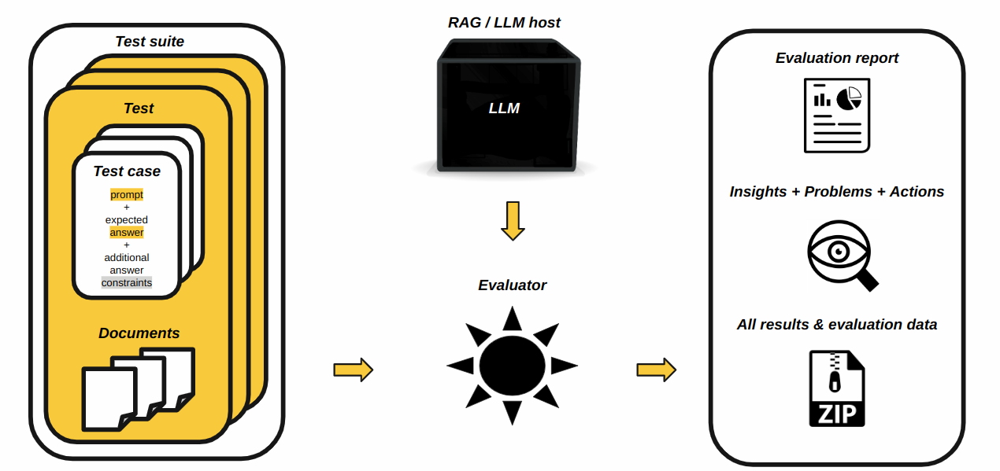

Evaluating RAGs and LLMs
H2O Eval Studio can evaluate standalone LLMs (Large Language Models) and LLMs used by RAG (Retrieval-augmented generation) systems.

LLMs are evaluated as follows:
Test Data Preparation
The first step is the preparation of test data - a set of test cases. Each test case is a dictionary with the query (prompt) and the expected answer in the context of given corpus (in case of RAG - LLM evaluation has empty corpus). Test cases which use the same corpus are grouped into a test. Tests are grouped into a test suite. (see Test Case, Suite, Lab and LLM Dataset for more details).
Test suite example:
{
"name": "Test Suite Example",
"description": "This is a test suite example.",
"tests": [
{
"key": "da503caf-a2dc-4c0a-b5f7-618bebd7860d",
"documents": [
"https://BUCKET.s3.amazonaws.com/corpus-document.pdf"
],
"test_cases": [
{
"key": "d981bf23-9790-4c5e-905e-2ab56cba7ece",
"prompt": "What was the revenue of Brazil?",
"categories": [
"question_answering"
],
"relationships": [],
"expected_output": "Brazil revenue was 15,969 million.",
"condition": "\"15,969\" AND \"million\""
}
]
}
]
}
System Under Evaluation Connection
The next step is to provide connect information of the system to be evaluated using the test suite. The set of supported systems is documented by RAG and LLM Hosts section.
Example of the Enterprise h2oGPTe LLM host connection configuration:
h2o_gpte_connection = h2o_sonar_config.ConnectionConfig(
connection_type=h2o_sonar_config.ConnectionConfigType.H2O_GPT_E.name,
name="H2O GPT Enterprise",
description="H2O GPT Enterprise LLM host example.",
server_url="https://h2ogpte.h2o.ai/",
token="YOUR_API_TOKEN_HERE",
token_use_type=h2o_sonar_config.TokenUseType.API_KEY.name,
)
Test Data Resolution
Having test suite and connection to the system to be evaluated, the next step is to resolve it to the test lab - that is a set of test cases with resolved data - actual answers, duration, cost, etc. for each test case.
Example of the test lab resolution for an LLM host connection and test suite:
test_lab = testing.RagTestLab.from_llm_test_suite(
llm_host_connection=h2o_gpte_connection,
llm_test_suite=test_suite,
llm_model_type=models.ExplainableModelType.h2ogpte_llm,
llm_model_names=llm_model_names,
)
# create collections and upload corpus documents (RAG only)
test_lab.build()
# resolve test lab
test_lab.complete_dataset()
Argument llm_model_names is a list of LLM model names to be evaluated - for example [“h2oai/h2ogpt-4096-llama2-70b-chat”, “h2oai/h2ogpt-4096-llama2-13b-chat”].
Example of the test lab with resolved data:
{
"name": "TestLab",
"description": "Test lab for RAG evaluation.",
"raw_dataset": {
"inputs": [
{
"input": "What is the purpose of the document?",
"corpus": [
"https://www.federalreserve.gov/supervisionreg/srletters/sr1107a1.pdf"
],
"context": [],
"categories": [
"question_answering"
],
"relationships": [],
"expected_output": "The purpose of this document is to provide comprehensive guid...",
"output_condition": "\"guidance\" AND \"model risk management\"",
"actual_output": "",
"actual_duration": 0.0,
"cost": 0.0,
"model_key": "0c34cdae-d2a4-4557-a305-d182adb01f6f"
}
]
},
"dataset": {
"inputs": [
{
"input": "What is the purpose of the document?",
"corpus": [
"https://www.federalreserve.gov/supervisionreg/srletters/sr1107a1.pdf"
],
"context": [
"Changes in\nregulation have spurred some of the recent developments, parti...",
"Analysis of in-\nsample fit and of model performance in holdout samples (d...",
"Validation reports should articulate model aspects that were reviewed, hig...",
"Page 1\nSR Letter 11-7\nAttachment\nBoard of Governors of the Federal Rese...",
"Documentation of model development and validation should be sufficiently\n...",
],
"categories": [
"question_answering"
],
"relationships": [],
"expected_output": "The purpose of this document is to provide comprehensive gu...",
"output_condition": "\"guidance\" AND \"model risk management\"",
"actual_output": "The purpose of the document is to provide comprehensive guida...",
"actual_duration": 8.280992269515991,
"cost": 0.0036560000000000013,
"model_key": "0c34cdae-d2a4-4557-a305-d182adb01f6f"
}
]
},
"models": [
{
"connection": "612db877-cba2-4ab8-bacf-88d84b396450",
"model_type": "h2ogpte",
"name": "RAG model h2oai/h2ogpt-4096-llama2-70b-chat (docs: ['sr1107a1.pdf'])",
"collection_id": "263c58e6-7424-4f9e-aa02-347d7281439b",
"collection_name": "RAG collection (docs: ['sr1107a1.pdf'])",
"llm_model_name": "h2oai/h2ogpt-4096-llama2-70b-chat",
"documents": [
"https://www.federalreserve.gov/supervisionreg/srletters/sr1107a1.pdf"
],
"key": "0c34cdae-d2a4-4557-a305-d182adb01f6f"
},
{
"connection": "612db877-cba2-4ab8-bacf-88d84b396450",
"model_type": "h2ogpte",
"name": "RAG model h2oai/h2ogpt-4096-llama2-13b-chat (docs: ['sr1107a1.pdf'])",
"collection_id": "263c58e6-7424-4f9e-aa02-347d7281439b",
"collection_name": "RAG collection (docs: ['sr1107a1.pdf'])",
"llm_model_name": "h2oai/h2ogpt-4096-llama2-13b-chat",
"documents": [
"https://www.federalreserve.gov/supervisionreg/srletters/sr1107a1.pdf"
],
"key": "14ac0946-6547-48d1-b19a-41bc90d34849"
}
],
"llm_model_names": [
"h2oai/h2ogpt-4096-llama2-70b-chat",
"h2oai/h2ogpt-4096-llama2-13b-chat"
],
"docs_cache": {
"https://www.federalreserve.gov/supervisionreg/srletters/sr1107a1.pdf": "/tmp/pytest-of-me/sr1107a1.pdf"
}
}
LLM Evaluation
Test lab with resolved data has everything needed to evaluate the LLMs by Evaluators.
Example of the LLM evaluation:
evaluation = evaluate.run_evaluation(
# test lab provides resolved test data for evaluation as dataset
dataset=test_lab.dataset,
# models to be evaluated
models=list(test_lab.evaluated_models.values()),
# evaluators
evaluators=evaluators,
# where to save the report
results_location=result_dir,
)
Evaluation Results Analysis
The last step is the analysis of the evaluation results. The results are saved in the results_location directory as a HTML report (for humans), JSon report (for machines) and per-evaluator directory with all the data which were used for the evaluation and created by evaluators - see Report and Results and Evaluators sections for more details.
Example of the evaluation results analysis:
# HTML report
html_report_path = evaluation.result.get_html_report_location()
# evaluator results
evaluator_result = evaluation.get_evaluator_result(
rag_tokens_presence_evaluator.RagStrStrEvaluator().evaluator_id()
)
evaluator_result.summary()
evaluator_result.data()
evaluator_result.params()
evaluator_result.plot()
evaluator_result.log()